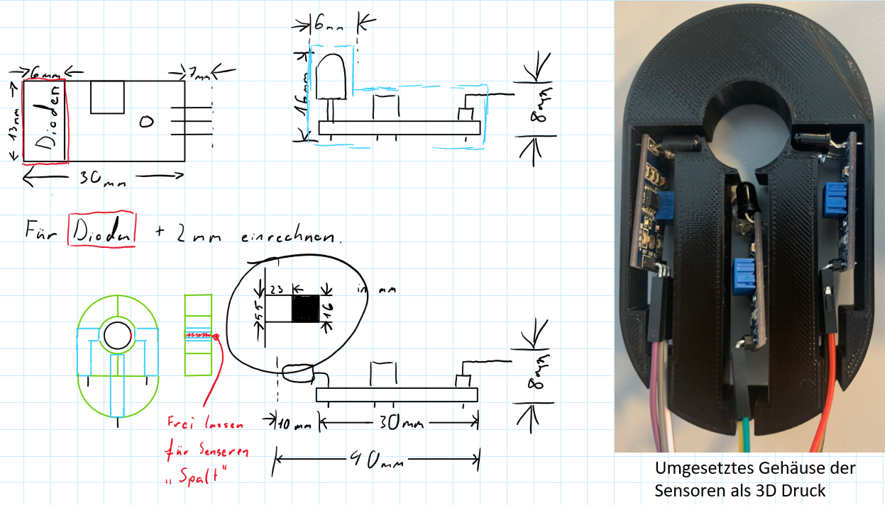
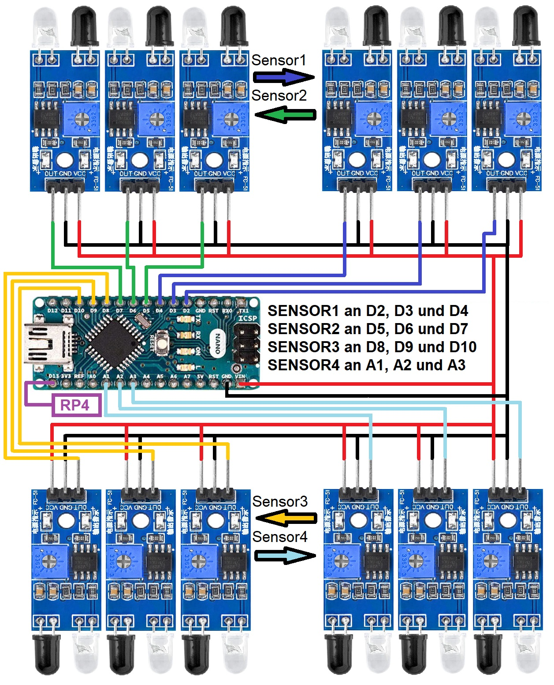

Dokumentation zur Kurbelerkennung#
Zur Erkennung von einem Foul in Form einer Kurbelung wurden Sensoren für diese Aufgabe entworfen. Diese wurden an jede der Stangen befestigt und mithilfe von zwei Arduino Nanos verarbeitet.
Aufbau#
Konzept der Sensoren#
Die Kurbelsensoren bestehen aus drei IR-Hindernis-Sensoren, welche die Stangen überwachen, ob eine Markierung an der Stange die Sensoren passiert. Die Markierung ist Isolierband, welches auf der Oberseite der Stangen in der Ruheposition angebracht wurde. Für die drei Sensoren wurde eine Gehäuse entworfen und als 3D Druck hergestellt.

Beschaltung#
Die Sensoren werden durch zwei Arduino Nanos verarbeitet. Einen für jede Seite. Jeder Arduino verarbeitet jeweils vier Stangen. Die Arduinos senden jeweils nur ein Signal an den Raspberry Pi, auf welchem die Fouls verarbeitet werden. Die Sensoren und die Arduinos werden mit 5V betrieben.

Code#
Der Code wurde verfasst in der Arduino IDE
Die Sensoren sollen erkennen, wenn die Stange eine Umdrehung von mehr als 360 Grad druchführt. Dafür sollen die Sensoren aufnehmen, ob die Markierung innerhalb einer sehr kurzen Zeit an allen drei Sensoren passiert ist. Werden die Sensoren von der Markierung in der kurzen Zeit passiert, so wird vom Arduino ein HIGH Signal von einem Pin ausgesendet.
Globale Variablen#
const int sensorPinsA[] = {2, 3, 4};
const int outputPinA = 13;
bool sensorFlagsA[] = {false, false, false};
unsigned long lastActivationTimeA = 0;
const int sensorPinsB[] = {5, 6, 7};
const int outputPinB = 13;
bool sensorFlagsB[] = {false, false, false};
unsigned long lastActivationTimeB = 0;
const int sensorPinsC[] = {8, 9, 10};
const int outputPinC = 13;
bool sensorFlagsC[] = {false, false, false};
unsigned long lastActivationTimeC = 0;
const int sensorPinsD[] = {15, 16, 17};
const int outputPinD = 13;
bool sensorFlagsD[] = {false, false, false};
unsigned long lastActivationTimeD = 0;
Beschreibung der globalen Variablen#
sensorPinsA, sensorPinsB, sensorPinsC, sensorPinsD: Arrays, die die Pins der drei Sensoren für jede Gruppe definieren.
outputPinA, outputPinB, outputPinC, outputPinD: Pins der Outputs für jede Gruppe (alle Outputs teilen sich den Pin 13).
sensorFlagsA, sensorFlagsB, sensorFlagsC, sensorFlagsD: Arrays von booleschen Werten, die den Aktivierungsstatus der Sensoren verfolgen.
lastActivationTimeA, lastActivationTimeB, lastActivationTimeC, lastActivationTimeD: Zeitstempel der letzten Aktivierung eines Sensors in der jeweiligen Gruppe.
Setup-Funktion#
void setup() {
// Initialize the pins for the first trio
for (int i = 0; i < 3; i++) {
pinMode(sensorPinsA[i], INPUT);
}
pinMode(outputPinA, OUTPUT);
digitalWrite(outputPinA, LOW);
// Initialize the pins for the second trio
for (int i = 0; i < 3; i++) {
pinMode(sensorPinsB[i], INPUT);
}
pinMode(outputPinB, OUTPUT);
digitalWrite(outputPinB, LOW);
// Initialize the pins for the third trio
for (int i = 0; i < 3; i++) {
pinMode(sensorPinsC[i], INPUT);
}
pinMode(outputPinC, OUTPUT);
digitalWrite(outputPinC, LOW);
// Initialize the pins for the fourth trio
for (int i = 0; i < 3; i++) {
pinMode(sensorPinsD[i], INPUT);
}
pinMode(outputPinD, OUTPUT);
digitalWrite(outputPinD, LOW);
}
Beschreibung der Setup-Funktion#
Die setup()-Funktion initialisiert die Sensorpins als Eingänge und die Output-Pins als Ausgänge. Zusätzlich werden die Outputs zu Beginn auf LOW gesetzt.
Loop-Funktion#
void loop() {
handleSensors(sensorPinsA, sensorFlagsA, outputPinA, lastActivationTimeA);
handleSensors(sensorPinsB, sensorFlagsB, outputPinB, lastActivationTimeB);
handleSensors(sensorPinsC, sensorFlagsC, outputPinC, lastActivationTimeC);
handleSensors(sensorPinsD, sensorFlagsD, outputPinD, lastActivationTimeD);
}
Beschreibung der Loop-Funktion#
Die loop()-Funktion ruft die handleSensors()-Funktion für jede Sensorgruppe auf, um deren Zustand kontinuierlich zu überwachen und entsprechend die Outputs zu steuern.
Sensor-Handling-Funktion#
void handleSensors(const int sensorPins[], bool sensorFlags[], int outputPin, unsigned long &lastActivationTime) {
bool allSensorsActivated = true;
for (int i = 0; i < 3; i++) {
int sensorState = digitalRead(sensorPins[i]);
if (sensorState == HIGH && !sensorFlags[i]) {
sensorFlags[i] = true;
lastActivationTime = millis();
}
if (sensorFlags[i] == false) {
allSensorsActivated = false;
}
}
if (allSensorsActivated && (millis() - lastActivationTime <= 50)) {
digitalWrite(outputPin, HIGH);
} else if (millis() - lastActivationTime > 50) {
for (int i = 0; i < 3; i++) {
sensorFlags[i] = false;
}
digitalWrite(outputPin, LOW);
}
}
Beschreibung der Sensor-Handling-Funktion#
Die handleSensors()-Funktion überwacht die Sensoren einer Gruppe und steuert den zugehörige Output. Wenn alle drei Sensoren innerhalb von 50 Millisekunden aktiviert werden, wird ein HIGH vom Output ausgegeben. Andernfalls wird der Output auf LOW gesetzt und die Sensorflags zurückgesetzt.
Parameter#
sensorPins: Array der Sensorpins für die Gruppe.
sensorFlags: Array der booleschen Flags, die den Aktivierungsstatus der Sensoren verfolgen.
outputPin: Pin des Outputs für die Gruppe.
lastActivationTime: Zeitstempel der letzten Sensoraktivierung.